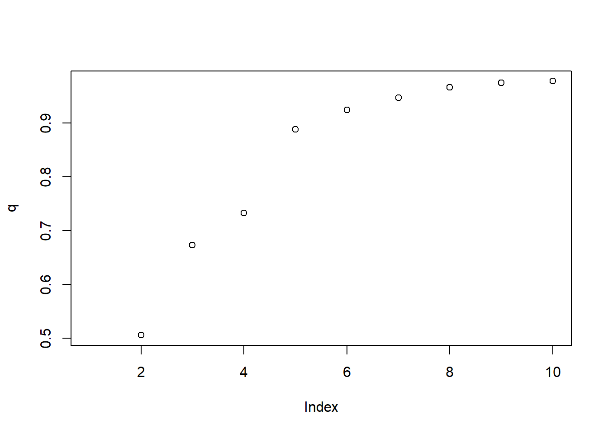

airbnb<-read.csv('airbnb-listings.csv',sep = ';')
options(repr.plot.height=4,repr.plot.width=6,repr.plot.res = 300)Vasmos a cargar el dataset de AirBnB descargado de aquí

- Vamos a quedarnos con las columnas de mayor interés: ‘City’,‘Room.Type’,‘Neighbourhood’,‘Accommodates’,‘Bathrooms’,‘Bedrooms’,‘Beds’,‘Price’,‘Square.Feet’,‘Guests.Included’,‘Extra.People’,‘Review.Scores.Rating’,‘Latitude’, ‘Longitude’ Nos quedarmos solo con las entradas de Madrid para Room.Type==“Entire home/apt” y cuyo barrio (Neighbourhood) no está vacio ’’ Podemos eliminar las siguientes columnas que ya no son necesarias: “Room.Type”,‘City’ Llama a nuevo dataframe df_madrid.
library(tidyverse)── Attaching core tidyverse packages ──────────────────────── tidyverse 2.0.0 ──
✔ dplyr 1.1.1 ✔ readr 2.1.4
✔ forcats 1.0.0 ✔ stringr 1.5.0
✔ ggplot2 3.4.2 ✔ tibble 3.2.1
✔ lubridate 1.9.2 ✔ tidyr 1.3.0
✔ purrr 1.0.1
── Conflicts ────────────────────────────────────────── tidyverse_conflicts() ──
✖ dplyr::filter() masks stats::filter()
✖ dplyr::lag() masks stats::lag()
ℹ Use the conflicted package (<http://conflicted.r-lib.org/>) to force all conflicts to become errors# Filtrar
airbnbs_sub <- airbnb |>
select(c('City','Room.Type','Neighbourhood','Accommodates','Bathrooms','Bedrooms','Beds','Price','Square.Feet','Guests.Included','Extra.People','Review.Scores.Rating','Latitude', 'Longitude' ))
df_madrid <- airbnbs_sub[airbnb$City=="Madrid" & airbnb$Room.Type=="Entire home/apt" & airbnb$Neighbourhood != "",]
# Eliminar columnas innecesarias
df_madrid <- select(df_madrid, -Room.Type, -City)- Crea una nueva columna llamada Square.Meters a partir de Square.Feet. Recuerda que un pie cuadrado son 0.092903 metros cuadrados.
# Crear nueva columna en metros
df_madrid$Square.Meters <- round(df_madrid$Square.Feet * 0.092903)
# Eliminar columna en pies
df_madrid <- select(df_madrid, -Square.Feet)- ¿Que porcentaje de los apartamentos no muestran los metros cuadrados? Es decir, ¿cuantos tienen NA en Square.Meters?
porcentaje_na <- mean(is.na(df_madrid$Square.Meters)) * 100
paste0("El porcentaje de NA es: ", round(porcentaje_na, 2), " %")[1] "El porcentaje de NA es: 93.8 %"- De todos los apartamentos que tienen un valor de metros cuadrados diferente de NA ¿Que porcentaje de los apartamentos tienen 0 metros cuadrados?
porcentaje_0m <- mean(df_madrid$Square.Meters == 0, na.rm = TRUE) * 100
paste0("El porcentaje de 0s es de: ", round(porcentaje_0m, 2), " %")[1] "El porcentaje de 0s es de: 36.89 %"- Reemplazar todos los 0m^2 por NA
summary(df_madrid$Square.Meters) Min. 1st Qu. Median Mean 3rd Qu. Max. NA's
0.00 0.00 22.00 36.47 60.00 480.00 5254 df_madrid$Square.Meters[df_madrid$Square.Meters == 0] <- NA
summary(df_madrid$Square.Meters) Min. 1st Qu. Median Mean 3rd Qu. Max. NA's
2.00 30.00 50.00 57.79 75.00 480.00 5382 Hay muchos NAs, vamos a intentar crear un modelo que nos prediga cuantos son los metros cuadrados en función del resto de variables para tratar de rellenar esos NA. Pero antes de crear el modelo vamos a hacer: * pintar el histograma de los metros cuadrados y ver si tenemos que filtrar algún elemento más. * crear una variable sintética nueva basada en la similitud entre barrios que usaremos en nuestro modelo.
- Pinta el histograma de los metros cuadrados y ver si tenemos que filtrar algún elemento más
ggplot(data = df_madrid, aes(x = Square.Meters)) + geom_histogram(bins = 70)Warning: Removed 5382 rows containing non-finite values (`stat_bin()`).- Asigna el valor NA a la columna Square.Meters de los apartamentos que tengan menos de 20 m^2
# Asignar valor NA a los menores de 20m2
summary(df_madrid$Square.Meters) Min. 1st Qu. Median Mean 3rd Qu. Max. NA's
2.00 30.00 50.00 57.79 75.00 480.00 5382 df_madrid<-df_madrid |> mutate(Square.Meters = ifelse(Square.Meters < 20, NA, Square.Meters))
# Asignar valor NA a los menores de 400m2 outliers
df_madrid<-df_madrid |> mutate(Square.Meters = ifelse(Square.Meters > 400, NA, Square.Meters))
summary(df_madrid$Square.Meters) Min. 1st Qu. Median Mean 3rd Qu. Max. NA's
20.00 45.00 60.00 67.72 80.00 200.00 5425 - Existen varios Barrios que todas sus entradas de Square.Meters son NA, vamos a eliminar del dataset todos los pisos que pertenecen a estos barrios.
paste("Hay en el dataset",length(unique(df_madrid$Neighbourhood)),"barrios")[1] "Hay en el dataset 65 barrios"# Dimension
dim(df_madrid)[1] 5601 12# Agrupar los barrios con todas los metros en NA
barrios_na <- df_madrid |> group_by(Neighbourhood) |>
filter(all(is.na(Square.Meters))) |> distinct(Neighbourhood)
# Borrar de df_madrid los barrios con todo NAs
df_madrid <- df_madrid|>
filter(!(Neighbourhood %in% barrios_na$Neighbourhood))
paste("Hay ",length(unique(df_madrid$Neighbourhood)),"barrios sin NA")[1] "Hay 38 barrios sin NA"# Dimension
dim(df_madrid)[1] 4901 12El barrio parece ser un indicador importante para los metros cuadrados de un apartamento.
Vamos a agrupar los barrios por metros cuadrados. Podemos usar una matriz de similaridad de Tukey tal y como hicimos en el curso de estadística:
tky<-TukeyHSD(aov( formula=Square.Meters~Neighbourhood, data=df_madrid ))
tky.result<-data.frame(tky$Neighbourhood)
cn <-sort(unique(df_madrid$Neighbourhood))
resm <- matrix(NA, length(cn),length(cn))
rownames(resm) <- cn
colnames(resm) <- cn
resm[lower.tri(resm) ] <- round(tky.result$p.adj,4)
resm[upper.tri(resm) ] <- t(resm)[upper.tri(resm)]
diag(resm) <- 1
library(ggplot2)
library(reshape2)
Attaching package: 'reshape2'The following object is masked from 'package:tidyr':
smithsdfResm <- melt(resm)
ggplot(dfResm, aes(x=Var1, y=Var2, fill=value))+
geom_tile(colour = "black")+
scale_fill_gradient(low = "white",high = "steelblue")+
ylab("Class")+xlab("Class")+theme_bw()+
theme(axis.text.x = element_text(angle = 90, hjust = 1),legend.position="none")- Usando como variable de distancia: 1-resm Dibuja un dendrograma de los diferentes barrios.
library(dendextend)
---------------------
Welcome to dendextend version 1.17.1
Type citation('dendextend') for how to cite the package.
Type browseVignettes(package = 'dendextend') for the package vignette.
The github page is: https://github.com/talgalili/dendextend/
Suggestions and bug-reports can be submitted at: https://github.com/talgalili/dendextend/issues
You may ask questions at stackoverflow, use the r and dendextend tags:
https://stackoverflow.com/questions/tagged/dendextend
To suppress this message use: suppressPackageStartupMessages(library(dendextend))
---------------------
Attaching package: 'dendextend'The following object is masked from 'package:stats':
cutreed <- as.dist(1 - resm)
hc <- hclust(d, method="complete")
hcd <- as.dendrogram(hc)
plot(color_branches(hcd))- ¿Que punto de corte sería el aconsejable?, ¿cuantos clusters aparecen?
library(cluster)
# K-means
q<-c()
for (k in 2:10){
myclust<-kmeans(d,k)
q[k]<-myclust$betweenss/myclust$totss
}
plot(q)
#Parece que el mejor es 2
# Dendrograma con corte en 0.6
plot(color_branches(hcd,h=0.9))
abline(h=0.1, col='red')# Calcular silhouette con tres cluster donde se aprecia que hay datos que se estan en otros clusters, hay un cluster con solo un 34%, es bajo, sin embargo tienen buena curva porque hacen angulo de 90º
ct<-cutree(hc,h=0.1)
sil<-silhouette(ct,d)
plot(sil,border=NA)# El punto de corte seria aconsejable en 0.6 y el numero de cluster serian 2- Vamos a crear una nueva columna en el dataframe df_madrid con un nuevo identificador marcado por los clusters obtenidos. Esta columna la llamaremos neighb_id
# Factorizamos neighb_id
str(df_madrid)'data.frame': 4901 obs. of 12 variables:
$ Neighbourhood : chr "Embajadores" "Embajadores" "La Latina" "Embajadores" ...
$ Accommodates : int 2 5 4 4 2 14 2 5 4 5 ...
$ Bathrooms : num 1 1 1 1 1 2 1 3 1 2 ...
$ Bedrooms : int 1 2 1 1 1 3 1 3 1 2 ...
$ Beds : int 2 4 2 2 1 14 1 3 1 2 ...
$ Price : int 50 95 69 57 59 120 89 192 100 100 ...
$ Guests.Included : int 1 4 2 2 1 2 1 2 2 2 ...
$ Extra.People : int 20 0 18 8 0 18 10 12 12 15 ...
$ Review.Scores.Rating: int 93 97 91 98 95 92 98 80 NA 95 ...
$ Latitude : num 40.4 40.4 40.4 40.4 40.4 ...
$ Longitude : num -3.7 -3.7 -3.71 -3.7 -3.71 ...
$ Square.Meters : num NA NA NA NA NA NA NA NA NA NA ...cluster <- as.factor(cutree(hc, h = 0.1))
df_madrid$neighb_id <- cluster[df_madrid$Neighbourhood]
# Eliminamos los datos con metros en NA
df_madrid_na <- df_madrid |> filter(!is.na(Square.Meters))
str(df_madrid_na)'data.frame': 176 obs. of 13 variables:
$ Neighbourhood : chr "La Latina" "Acacias" "Malasaña" "Recoletos" ...
$ Accommodates : int 6 4 4 2 8 4 6 5 6 9 ...
$ Bathrooms : num 2 1 1 1 2 1.5 2 1 1 2 ...
$ Bedrooms : int 2 1 2 0 3 2 2 3 2 4 ...
$ Beds : int 2 2 3 2 4 2 4 3 3 8 ...
$ Price : int 72 60 105 61 120 95 500 70 102 120 ...
$ Guests.Included : int 2 2 1 1 6 2 3 1 1 8 ...
$ Extra.People : int 20 15 0 0 0 15 5 10 11 20 ...
$ Review.Scores.Rating: int 90 98 97 92 83 89 84 90 80 91 ...
$ Latitude : num 40.4 40.4 40.4 40.4 40.4 ...
$ Longitude : num -3.71 -3.71 -3.7 -3.69 -3.71 ...
$ Square.Meters : num 55 50 70 30 110 97 105 80 75 100 ...
$ neighb_id : Factor w/ 3 levels "1","2","3": 2 1 2 2 2 1 2 2 1 3 ...- Vamos a crear dos grupos, uno test y otro train.
set.seed(1234)
idx<-sample(1:nrow(df_madrid_na),nrow(df_madrid_na)*0.7)
df_madrid_train<-df_madrid_na[idx,]
df_madrid_test<-df_madrid_na[-idx,]- Tratamos de predecir los metros cuadrados en función del resto de columnas del dataframe.
# model_df_madrid<-lm(formula=Square.Meters~Accommodates+Bedrooms+Beds+Price+Accommodates, df_madrid_train) # Hay overfitting
# model_df_madrid<-lm(formula=Square.Meters~Accommodates+Bedrooms+Beds+Price+neighb_id, df_madrid_train) # Quitamos Accommodates y sigue con overfitting
# model_df_madrid<-lm(formula=Square.Meters~Accommodates+Bedrooms+Price+neighb_id, df_madrid_train) #sigue igual vamos a cambiar el modelo
# model_df_madrid<-lm(formula=Square.Meters~Price+Price+Accommodates+Bedrooms+Price+neighb_id, df_madrid_train) # Hay overfitting
model_df_madrid<-lm(formula=Square.Meters~Price+Price+Bedrooms+neighb_id, df_madrid_train) # Quitamos Accommodates hay un poco de overfitting pero podria servir
summary(model_df_madrid)
Call:
lm(formula = Square.Meters ~ Price + Price + Bedrooms + neighb_id,
data = df_madrid_train)
Residuals:
Min 1Q Median 3Q Max
-39.611 -12.863 -2.513 8.792 82.722
Coefficients:
Estimate Std. Error t value Pr(>|t|)
(Intercept) 38.42630 4.77469 8.048 8.14e-13 ***
Price 0.07395 0.02922 2.531 0.0127 *
Bedrooms 21.37819 2.29584 9.312 9.74e-16 ***
neighb_id2 -19.35888 3.98746 -4.855 3.79e-06 ***
neighb_id3 -2.18633 9.91979 -0.220 0.8259
---
Signif. codes: 0 '***' 0.001 '**' 0.01 '*' 0.05 '.' 0.1 ' ' 1
Residual standard error: 20.59 on 116 degrees of freedom
(2 observations deleted due to missingness)
Multiple R-squared: 0.6697, Adjusted R-squared: 0.6583
F-statistic: 58.8 on 4 and 116 DF, p-value: < 2.2e-16df_madrid_test$predict_result<-predict(model_df_madrid, df_madrid_test)caret::postResample(predict(model_df_madrid,df_madrid_train),obs = df_madrid_train$Square.Meters) RMSE Rsquared MAE
20.1626806 0.6697085 14.8259791 caret::postResample(predict(model_df_madrid,df_madrid_test),obs = df_madrid_test$Square.Meters) RMSE Rsquared MAE
18.061373 0.685631 13.634203 # Hay un aumeto en el r2 de 0.66 (no muy alto en train) a 0.68 en test y existe poca relacion con el neighb_id3 - Mirad el histograma de los residuos sobre el conjunto de test para evaluar la calidad de vuestro modelo
hist(model_df_madrid$residual,breaks=30)# Hay outlayers
plot(model_df_madrid$model$Square.Meters,model_df_madrid$residual)qqnorm(df_madrid_test$Square.Meters-df_madrid_test$predict_result)
qqline(df_madrid_test$Square.Meters-df_madrid_test$predict_result, col = 'blue', lwd =2)# Podemos decir que no hay o es poca la heterocedasticidad la varianza parece que tiene tendencia a aumenta un poco
# No existe una pendiente muy grande y permanecen en un rango entre -40 y 60- Si tuvieramos un anuncio de un apartamento para 6 personas (Accommodates), con 1 baño, con un precio de 80€/noche y 3 habitaciones en el barrio de Sol, con 3 camas y un review de 80. ¿Cuantos metros cuadrados tendría? Si tu modelo necesita algúna variable adicional puedes inventartela dentro del rango de valores del dataset. ¿Como varía sus metros cuadrados con cada habitación adicional?
# Miramos que neighb_id tiene
neighb_id_sol<-df_madrid_na |> filter(Neighbourhood=="Sol") |> select(neighb_id)
neighb_id_sol neighb_id
1 1
2 1
3 1
4 1
5 1
6 1
7 1
8 1
9 1
10 1
11 1
12 1
13 1
14 1
15 1
16 1
17 1
18 1
19 1
20 1
21 1
22 1
23 1
24 1
25 1
26 1
27 1
28 1
29 1# Creamos el apartamento con su factor
df_apartment1 <- data.frame(
"Accommodates" = 6,
"Bathrooms" = 1,
"Price" = 80,
"Bedrooms" = 3,
"Neighbourhood" = "Sol",
"Beds" = 3,
"Review.Scores.Rating" = 80,
"neighb_id" = as.factor(1)
)predict_m2_1 <- predict(model_df_madrid, df_apartment1)
round(predict_m2_1,2) 1
108.48 df_apartment2 <- data.frame(
"Accommodates" = 6,
"Bathrooms" = 1,
"Price" = 80,
"Bedrooms" = 4,
"Neighbourhood" = "Sol",
"Beds" = 3,
"Review.Scores.Rating" = 80,
"neighb_id" = as.factor(1)
)predict_m2_2 <- predict(model_df_madrid, df_apartment2, na.action = na.pass)
round(predict_m2_2,2) 1
129.86 predict_m2_2 - predict_m2_1 1
21.37819 # Con cada habitacion varia 21.378 m2- Rellenar los Square.Meters con valor NA con el estimado con el modelo anterior.
# Buscar todos los NAs
nas <- which(is.na(df_madrid$Square.Meters))
# Pasarles la prediccion a df_madrid
df_madrid$Square.Meters <- ifelse(is.na(df_madrid$Square.Meters), predict(model_df_madrid, df_madrid)[nas], df_madrid$Square.Meters)
# Por algun motivo que desconozco, he realizado el paso anterior de varias formas y en todas me pasa lo mismo, hay 10 apartamentos que se quedan en NAs despues de ejecutar la celda. Si vuelves ha ejecutar la celda por segunda vez, entonces si coge y predice los 10 apartamentos que faltan.
summary(df_madrid$Square.Meters) Min. 1st Qu. Median Mean 3rd Qu. Max. NA's
20.00 44.88 63.50 62.98 75.00 255.09 10 - Usar PCA para encontrar el apartamento más cercano a uno dado. Este algoritmo nos ayudaría a dado un apartamento que el algoritmo nos devolvería los 5 apartamentos más similares.
Crearemos una función tal que le pasemos un apartamento con los siguientes datos: * Accommodates * Bathrooms * Bedrooms * Beds * Price * Guests.Included * Extra.People * Review.Scores.Rating * Latitude * Longitude * Square.Meters
y nos devuelva los 5 más similares de:
# Dataframe con las columnas y sin NAs
df_madrid_pca<-na.omit(df_madrid[,c("Accommodates","Bathrooms","Bedrooms","Beds","Price", "Guests.Included", "Extra.People", "Review.Scores.Rating","Square.Meters","Latitude","Longitude")])
# Pasar matriz de apartamentos a PCA
pca<-prcomp(df_madrid_pca, center = TRUE, scale. = TRUE)# Mostrar PCA
plot(pca$sdev^2/sum(pca$sdev^2),main="Autovalores")# Se cogeran 4 variables para ser el 70 % aprox
num_pca=4# Funcion
similares<-function(pca, new_piso, knn){
# Calcular las coordenadas del apartamento utilizando el PCA y predict
Coordenadas_pca<-predict(pca, newdata = new_piso)
# Calcular las distancias euclidianas entre los apartamentos
dist <- rowSums((Coordenadas_pca[, 1:num_pca] - pca$x[, 1:num_pca])^2)
# Ordenar df_madrid_pca por las distancias y seleccionar según knn
df_madrid_pca_sorted <- df_madrid_pca[order(dist), ][1:knn, ]
return(df_madrid_pca_sorted)
}
# Muestra
piso<- df_madrid[288, c("Accommodates","Bathrooms","Bedrooms","Beds","Price", "Guests.Included", "Extra.People", "Review.Scores.Rating","Square.Meters","Latitude","Longitude")]
piso Accommodates Bathrooms Bedrooms Beds Price Guests.Included Extra.People
288 4 1 1 2 70 3 20
Review.Scores.Rating Square.Meters Latitude Longitude
288 96 25.64925 40.42201 -3.697071# Prueba
similares(pca,piso,5) Accommodates Bathrooms Bedrooms Beds Price Guests.Included Extra.People
1952 3 1 1 2 94 2 31
2708 4 1 2 3 50 2 12
4383 3 1 0 2 68 2 5
1142 3 1 1 1 65 1 10
1787 2 1 1 1 60 2 10
Review.Scores.Rating Square.Meters Latitude Longitude
1952 96 43.77350 40.42085 -3.698198
2708 95 86.72917 40.40838 -3.713791
4383 92 67.37029 40.41842 -3.700690
1142 94 71.06795 40.42170 -3.700173
1787 95 89.11824 40.42397 -3.702164